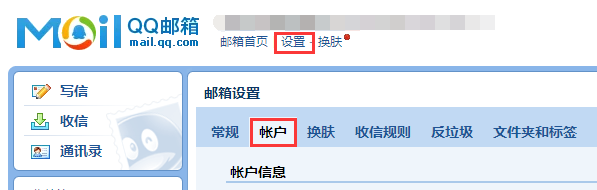
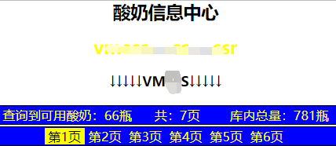
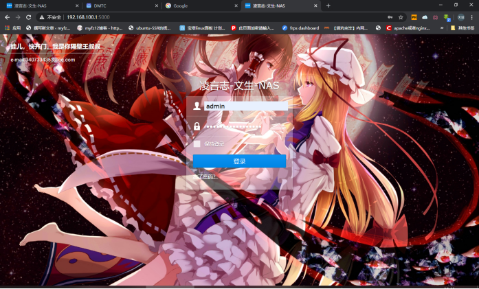

战神容器搭建使用手册
一．战神容器简介 https://hub.docker.com/r/dmtc/zhan-shen
功能：公网动态ddns解析，frpc穿透，frps开服，虚拟组网（穿透，公网4转6），公网4 6转 ，aria2+qbittorrent远程下载，酸奶库，酸奶，博客，web监控，自动更新tracker服务器，等
超级组合功能：（战神使用host网络=虚拟网络交换机-可跨不同ip进行上网代理-在群晖上可代替软路由进行跨网卡上网）（酸奶+aria2=可自动加速下载国外资源）（虚拟组网+公网4 6转=虚拟组网穿透）（虚拟组网+公网4 6转+qbittorrent=大内网用户可玩pt站进行正常上传-需要在pt站进行ip备案）其他组合功能等待发现，因为某些组合也是在折腾时发现的。
公网动态ddns解析：这个基本不用介绍了，就是帮你域名解析公网ip(支持 阿里 腾讯 国外cf 解析)，域名数量无限制，解析记录无限制，三个运营商可同时使用，内含ip变动通知（server酱+邮箱）
frpc穿透：帮你大内网穿透到外网，在外网可以访问家庭服务
frps开服：frpc的服务端，你可以开服给别人用或者自己用，或者你的局域网特别复杂1级路由想访问4级路由并且还不想改变网络就可以开个局域网的frp
虚拟组网（穿透，公网4转6）：这个功能是把不同地方的机器放到一个局域网里，利用公网4转6可以实现p2p穿透 避免常规客户端限制 只要打洞成功 任何设备访问都是p2p模式
常规穿透的2种模式：1，服务端客户端都要安装软件实现p2p穿透但未必能打洞成功 不成功需要依靠服务器中转
2，服务端安装客户端，完全依靠服务器中转
若依靠服务器中转，将占用服务器双倍上传，服务器速度为正常的一半，例如10M宽带的服务器最快只有5M
战神虚拟组网穿透：将2种模式融合，避免外网需要安装客户端的限制，任何设备不需要安装客户端都可p2p或中转访问家里服务，在打洞成功时速度是两地宽带上传的最低极限，打洞失败也可保证1MB/S的速度。若不能打洞还想免费更快可以使用公网4转6的负载均衡多次组虚拟局域网 进行负载均衡融合 速度同样可以达到宽带极限。
公网4 6转 ：公网v4转公网v6，公网v6转公网v4，虚拟局域网v4 v6转公网v4 v6可实现穿透
aria2：远程下载利器，在战神内配合酸奶可下载国外网络教程等资源
qbittorrent远程下载：bt pt下载利器 在使用过程中 发现比transmission要好用很多，响应速度快，更容易获取上传和下载速度，配合虚拟组网+公网4 6转可实现大内网用户玩pt的要求，正常进行上传
酸奶库：每日自动产奶，自动检测，完全无人操作，
酸奶：自动吸奶，自动换奶，完全无人操作，
博客：可以搭建你自己的博客小站
web监控：可用于监控网络服务器是否在线，监听家庭网络服务
自动更新tracker服务器：定时自动获取tracker服务器，自动更新aria2的tracker，在资源分布很散的时候可以加速下载
组合功能：虚拟网络交换机，战神在搭建的时候使用host网络，可实现多网卡虚拟桥接，
例： 群晖有3张网卡
网卡1接入正常上网的局域网或其他网络
在群晖控制面板为网卡2 3开启dhcp-server服务并为2 3网卡设置固定ip
然后将其他机器接入2或3的网卡将自动获取到群晖分配的ip，接着为电脑设置代理就可以正常上网了，即使是不能用虚拟机的机器只要有docker搭建战神都可以跨网卡上网，
如果你家没有网络，但是你群晖挂无线网卡蹭到网络了，同样可以通过群晖网口把网络供给电脑使用
二．容器搭建
方法1：ssh命令行搭建
方XX提供的一键搭建脚本命令：curl -sO {https://raw.githubusercontent.com/hd82099599/ZhanShenOneKeyInstall/master/install.sh};{chmod 7777 ./install.sh};{./install.sh}
方XX提供的一键搭建脚本命令：wget -q https://raw.githubusercontent.com/hd82099599/ZhanShenOneKeyInstall/master/install.sh;{chmod 7777 ./install.sh};{./install.sh}
云梦提供的一键搭建脚本命令：wget -q https://raw.githubusercontent.com/dmserver/dmserver.github.io/master/install.sh;{chmod 7777 ./install.sh};{./install.sh}
云梦提供的一键搭建脚本命令：wget -q https://raw.githubusercontent.com/dmserver/dmserver.github.io/master/install.sh;{chmod 7777 ./install.sh};{./install.sh}
ssh常规搭建-阿里加速下载搭建：
docker run -d --net=host --restart=always --name=zhanshen -v 本地目录:/downloads/aria2 -v 本地目录:/downloads/qbittorrent registry.cn-hangzhou.aliyuncs.com/yunshenbuzhichu/zhan-shen:0915 /bin/bash ./auto.sh
ssh常规搭建-docker-hub下载搭建：
docker run -d --net=host --restart=always --name=zhanshen -v 本地目录:/downloads/aria2 -v 本地目录:/downloads/qbittorrent dmtc/zhan-shen:0915 /bin/bash ./auto.sh
方法2：群晖面板搭建
首先打开群晖docker套件 搜索并下载战神容器
选择 映像 选择战神镜像 点击启动
点击高级设置 设置网络和下载目录
然后一直下一步，直到完成
接着打开战神进行使用
战神端口65530
ＤＤＮＳ端口54321
三．开始使用战神容器（首先根据引导完成自助激活）
1. 外网功能的使用
修改密码 及frp一键获取
公网IP变动通知 （邮箱设置）
首先要开启QQ邮箱的smtp服务，默认是关闭的。
登录QQ邮箱，点“设置” - “帐户”。

找到“POP3/SMTP服务”和“IMAP/SMTP服务”项，点“开启”。
开启之后，点击“生成授权码”。这个授权码将作为邮箱的身份认证密码。
这个授权码就是smtp独立密码
FRPC穿透
域名是谁家的就去谁家创建 id 和key
阿里
首先登录阿里云控制台 鼠标移动到头像 选择Accesskey 去创建自己的id和key
腾讯域名https://www.dnspod.cn/ 登录dnspod.cn 进入管理控制台
点击头像 选择密钥管理
绿色代表穿透成功
接下来将域名进行解析
这里需要设置两条记录 如图添加2条记录
等待10分钟域名解析生效就可以访问了
FRPS开服（自己拥有公网 为别人提供内网穿透） 如图照实填写就行
公网4 6代理实际上就是tcp端口代理 不管是内网端口 还是其他外网端口 只要能连接就能代理（若拥有公网可以将其他机器ip代理到公网端口，实现外网访问，并且支持代理虚拟局域网的任何ip 支持v4 v6 比如ze虚拟组网的ip）2条或多条代理时可以自动进行负载均衡
虚拟组网（用来组建虚拟网络） 这里是在群晖实体机安装套件，将不同地方的机器加入到一个虚拟局域网内（若某台机器拥有公网 使用46转代理可实现内网穿透）
DDNS动态解析（由于家庭宽带公网ip都不是固定的所以我们需要ddns进行域名自动解析）
首先添加域名 至于id 和key参考上面的教程
添加完成 进入管理 选择要解析的域名记录 如图进行选择就行了
酸奶库的使用（酸奶库只要你们自己添加订阅链接就行了）
然后设置自动检测时间 进行酸奶检测
检测完成后 在酸奶信息中心可以看到你自己的酸奶

酸奶代理（当酸奶库产出酸奶你们点击获取 然后一步一步进行解码就行了）
解码完成后可以到 2个管理库选择想使用的酸奶 平常不用管也行 因为酸奶不能用了会自动更换
手机订阅只要把localhost:65530换成你们自己的局域网地址或外网地址就行了
然后是代理URL 把你想代理的地址加到url库就行了
电脑使用酸奶
下面是win10的图 win7+win8参考https://jingyan.baidu.com/article/84b4f565a60b4560f6da3223.html

战神容器-下载器超神+手机代理模块使用教程
利用战神容器进行群晖跨网卡上网抛弃软路由
我的群晖网络结构
群晖网卡配置 本机自带固定ip192.168.99.1 255.255.255.0 192.168.99.254
扩展网卡 固定ip192.168.100.1 255.255.255.0 192.168.100.254
本机自带网卡作为主网口连接正常上网的局域网
战神容器使用host 网络
为扩展网卡开启DHCP 服务 避免咱们为每台设备去手动固定ip
接下来开始见证奇迹了
将你的电脑接到群晖的另一个网卡上开始跨网卡上网
我原本的局域网
接到群晖扩展网卡

正常是没有网络的 百度也打不开

开始拉注意拉 打开代理设置设置代理
因为咱们接的是扩展 的dhcp服务 群晖ip是192.168.100.1 所以代理地址是192.168.100.1
看看 百度可以打开了 gg也可以 这里面的网络在支持联网的pe也可以
网络状态也变了
然后看看群晖

这里绝对有人会怀疑我用虚拟机我给你看看图
看看没有吧有图有真相 当然有些人还是会显示 ipv4无网络 但实际上配置对了是可以上网的
对了战神7.7还有独立的DDNS服务
我把电脑接回去继续 端口54321 这个是原本的dmtc/ddns容器进行升级的后续版本 融合到战神
支持多用户注册 多人 多域名 支持账号密码召回 支持邮件通知 支持辅助解析 功能齐全
权限分配完整
ARIA2使用（默认没有密码 端口6800）

服务监控（账号密码都是admin）使用方法百度pushover使用教程（因为每个人要监控的东西都不一样）
博客搭建（根据提示操作安装就行了）
其它功能自行去体会我也不知道还有啥没发现的
其它功能你们自己去发现 我自己都没全使用 因为功能太多了 隐藏功能也很多
另外每个模块都是独立的 都可以独立使用 并不一定需要全部设置